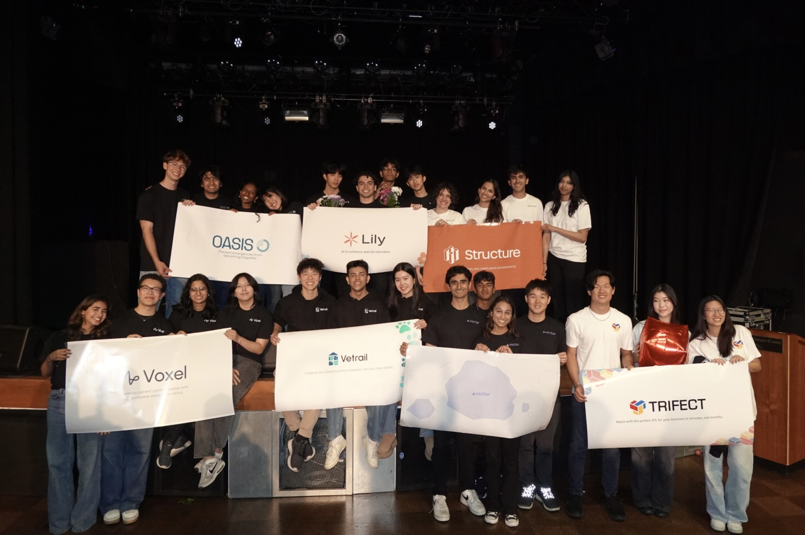
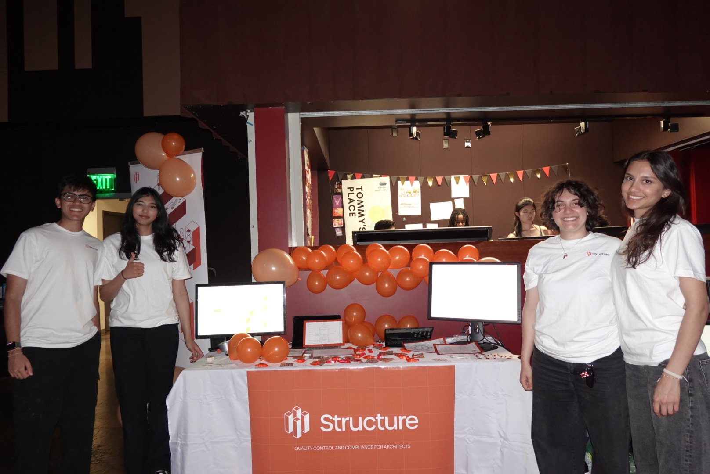
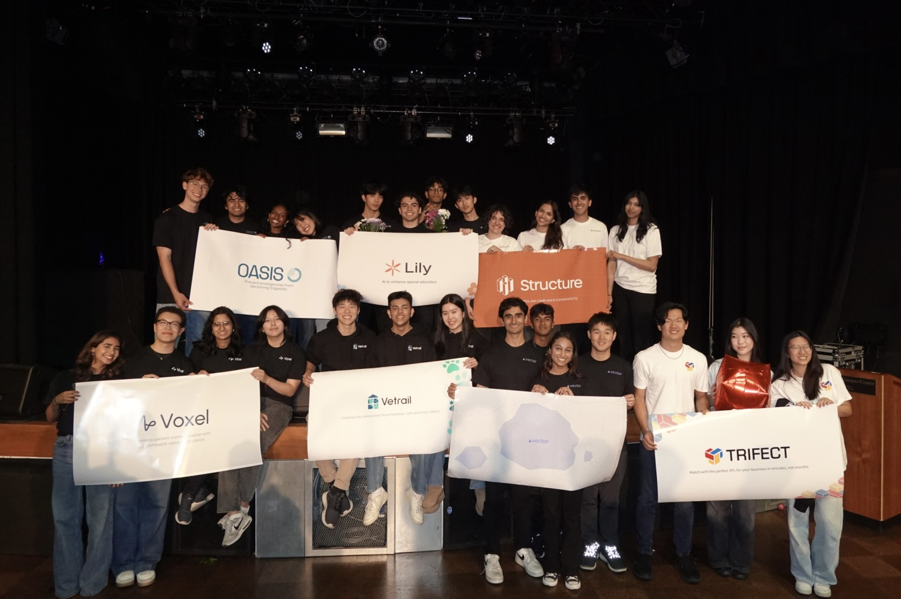
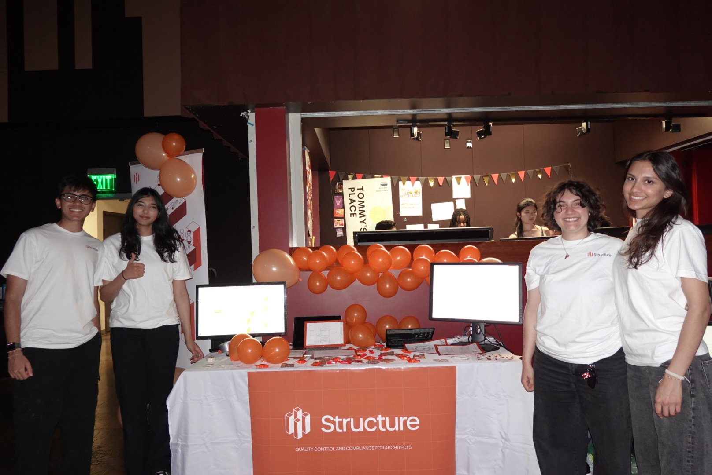

import <Structure>
QA/QC Compliance Copilot for Architects
Structure is a quality control and compliance copilot built for architects. Upload your plans, get instant feedback on compliance issues, and avoid months of costly delays and resubmittals. Structure takes advantage of VLM and LLM technology and augments it with retrieval augmented generation from city and state codes.
Key skills:
• NextJS
• Amazon S3
• RAG
• RESTful API
• LLM & VLM Prompt Engineering
Development Process
Founder First!
My semester participating in LavaLab was an incredible experience, and I would not replace it for anything. The goal of the club is to work on a team of four: two developers, a designer, and a product manager to build a viable product. As a developer, I was ready to get knee deep in code, but what I did not anticipate was getting knee deep in the world of entrepreneurship. Before I was a developer, I was a founder, which led me to send out hundreds of cold emails, hop onto meetings with any spare time that I had, and deep dive into our chosen industry, construction. By the end of the semester, our team had talked to around 300 different people in the construction and permitting space, from project managers to architects to LA city government plan checkers. Through all of these discussions, the same pain point kept coming up. The existing infrastructure for permit approval and feedback is outdated. The process can take an upwards of 6 months and the process of resubmission only delays this further. That is where we decided to intervene. We would build a tool that could run the initial compliance check, reducing the chances of permit resubmission.
Game Plan
Now, let me break down the task my developer and I had at hand. We wanted to take in architectural plans as input, analyze the plan for all necessary context, and then retrieve all relevant city, state, and international construction code in order to verify compliance. This was incredibly challenging just looking at the sheer amount of context we had to process. Architectural plans are incredibly dense drawings, so we decided to use VLM technology to break them down. This recent advancement helped us immensely, but there was still another major problem. How could we use the VLM to retrieve relevant rules and regulations? On their own, VLMs perform poorly when citing existing codes. As a result, we needed to augment the VLM with a database that explicitly defines all of the codes that governments lay out. We went through 1,000+ page PDFs to convert all of the codes and regulations into an embedding database. From there, we used the VLM to generate a set of queries that could query into the regulations database. This enabled us to use the VLM technology while also equipping it with the necessary domain knowledge to run a compliance check. This retrieval augmented generation allowed us to deliver compliance checks with more reliable code citations.
Build, Launch, & Iterate
While integrating the augmented VLM, my developer and I also had a web application to build. In order to achieve this, we dived into AWS tools to help set up standard web app features such as authentication and storage. Aside from this, we worked in collaboration with our designer, who gave us her plans on Figma. We would then build out pages on Next.js using the Figma files as a baseline. This is the product that we would then bring to our potential users to get feedback on. This process of building out an MVP (minimum viable product), demonstrating it to users, and then iterating upon it with their feedback is what led us to the final demo that you can see up at the top. The sprints and all-nighters that we pulled did not go to waste, as we won Judge’s Choice Award when we presented our work at LavaLab’s culminating showcase, Demo Day!
 


